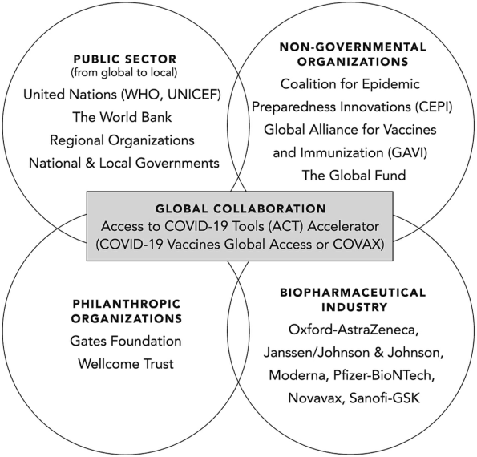

![]()
Introduction
This is a book review in progress, and feedback is welcomed and appreciated.
Lessons from the Covid Wars: An Investigative Report, by the Covid Crisis Group, was recently published by PublicAffairs [1]. The cost is $19.
I have been involved in the Covid pandemic response since the beginning [2–6]. I enjoyed this 34-author book because it covered the key decisions, policies, and politics at the national level, and the implications for future global, state, and local preparedness and response. Because they interviewed 300+ people and reviewed many publications, they were able to take a complex historical event and weave it into a coherent story of how the United States Covid response was led and managed at the national level. The lead author was Philip Zelikow, Professor of History at University of Virginia.
There are 10 lessons which are presented at the beginning of a 5-hour webinar sponsored by the National Academy of Medicine (NAM).1
For this book review/summary I viewed the following webinars
- Discussion of Findings from the Covid Crisis Group, sponsored by the National Academy of Medicine, featuring Victor Dzau, Philip Zelikow, Richard Danzig, John Barry, Marc Lipsitch, Gary Edson, Ruth Faden, Margaret (Peggy) Hamburg, Mark McClellan, Melissa Harvey, James Lawler, Monique K. Mansoura, Richard Hatchett, Kendall Hoyt, Michael Callahan, and Michael McGinnis
- Lessons from the Covid War: The report from the Covid Crisis Group, sponsored by the University of Virginia Miller Center, featuring Danielle Allen, Carter Mecher, Philip Zelikow, and Guian McKee (moderator)
- Lessons from the Covid War, sponsored by the Commonwealth Club, featuring Emily Silverman, David A. Relman, Robert Rodriguez, and Charity Dean
- Lessons learned from U.S. COVID-19 response, sponsored by the Washington Post Live (Dan Diamond, interviewer), featuring Philip Zelikow and Charity Dean
- Philip Zelikow discusses “Lessons from the Covid War” with Richard J. Hatchett and Kendall Hoyt, sponsored by the Harvard Book Store.
I recommend this book and hope this summary and review makes your reading of the book more productive. The book would have benefited by having an introductory chapter that summarized the 10 lessons, followed by the chapters in the same order.2
Here are the Table of Contents:
- From Tragedy to Possibility
- Origins, Prevention, and Warning
- The Defenders
- Containment Fails; Mobilization Lags
- Federal Crisis Management Collapses; Operation Warp Speed Begins
- Communities Improvise with Few Tools
- The Healthcare System Frays
- Trust and Confidence Break Down
- Fighting Back with Drugs and Vaccines
- Strategy for a Global War
- America the Competent?
The 10 Lessons
The 10 lessons do not completely correspond to the chapters. In the coming days I will be highlighting under each lesson what I found interesting and informative.
The Covid war is a story of how our wondrous scientific knowledge has run far, far ahead of the organized human ability to apply that knowledge in practice.
The mindset required to respond to the Covid pandemic is to treat it like fighting a war. In a war we face four challenges (p. 5):
- “Prevent and warn. Size up the danger, engage citizens, and track the enemy.”
- “Contain the attack. Keep the enemy out of the country or confine its spread.”
- “Defend our communities. Protect not only lives, but also our way of life, with proper healthcare and non-medical measures.”
- “Fight back. Develop and deploy medical countermeasures such as tests, medicines, and vaccines.”
The United States did not have a war mindset. We were not prepared, and we did not respond with the urgency of fighting a war against a novel microbial threat. We had the knowledge—what we should do, but lacked how we should do it. And we lacked the national leadership in 2020 to ensure we tackle the four challenges.
Why? There are three main cultures in governance:
- “culture of programs and process” (budget appropriation and administration).
- “culture of research and investigation” (knowledge discovery).
- “culture of operations” (knowledge deployment: implementing in the field at speed and at scale).
“The challenge in the Covid war, as in any great emergency, is to meld all these cultures in practice.”
“The Covid war revealed a collective national incompetence in governance. The leaders of the United States could not apply their country’s vast assets effectively enough in practice. Trust and confidence in government—already low—further eroded. The most successful national program to wage the war to produce and distribute vaccines, Operation Warp Speed, ended up having to be run substantially by the Department of Defense.”
My take: In general, I agree.
The United States met te 21st century pandemic with structures mainly built for 19th century problems.
Yes, this is absolutely true. Through international travel, the world is more connected now than ever. An novel infection in one part of the world can quickly spread to several continents. And, it’s well documented the health departments have been underinvested for decades and lack infrastructure for 21st century threats, this includes the Centers for Disease Control and Prevention.
The United States needs a new “National Health Security Enterprise” that provides “strategic-level governance” over, at least, the following:
- the public health community (CDC and the thousands of health departments);
- the healthcare system (public and private); and
- the biopharma system (public and private) for developing and deploying tests, drugs, and vaccines.
The problems identified include:
- Public health governance and operational capabilities are decentralized across State, Tribal, Local, and Territorial health jurisdiction. Federal health agencies have limited influence.
- The healthcare system is not a system; it is a fragmented connection of entities (payors, plans, providers, pharma, suppliers, etc.), many in transactional relationships to profit from sickness care. Healthcare has limited preparedness connections with public health except for small CDC grants.
- The biopharma industry has little, if any, financial incentive to invest in infectious disease emergency preparedness and response.
The new “National Health Security Enterprise” would reimagine and reorganize these relationships and invest in preparedness as if we are preparing for a war.
Partisan divisions over America’s Covid response were partly the result of policy failure, not its cause.
“To be clear: there is a common view that politics, a ‘Red response’ and a ‘Blue response’, were the main obstacle to protecting citizens, not competence and policy failures. We found, instead, that it was more the other way around. Incompetence and policy failures, including the failure of federal executive leadership, produced bad outcomes, flying blind, and resorting to blunt instruments. Those failures and tensions fed toxic politics that further divided the country in a crisis rather than bringing it together.”
There is not enough evidence available from inside of China to come down hard on any theory of the origins of SARS-CaV-2. But what is already know drives two great agendas for the future.
This was one of my favorite chapters. It was very thoughtful and systematic.
How was SARS-CoV-2 introduced into the human population?
- “… humans transported wild animals carrying the virus to Wuhan.”
- “… humans transported their collected virus samples back to a lab in Wuhan and that the virus crossed over to humans in some part of the research process, from collection to experimentation.”
- “The research process theory has two main hypotheses.”
- “… a natural virus could have infected a human while collecting field samples in southern China, and this person traveled back to Wuhan before infecting others.”
- “… laboratory staff used modern genetic engineering tools capable of making a bat coronavirus more transmissible among humans and such experiments may have led to the creation of SARS-CoV-2.”
- If SARS-CoV-2 was in a research laboratory, how did it get into the human population?
- intentional release
- laboratorian infected (from cell culture or animal)
- failure of laboratory infection control safeguards
Bottom line: there is insufficient evidence to conclude with confidence which of these theories is the likely causal explanation.
How can we improve for the future?
“First, we believe governments must improve their intelligence about what is going on—their situation awareness. The past system relied on national governments like China to provide timely reporting of what was happening. That system decisively failed. We need to envision an alternative.”
“Second, we suggest a large, difficult multinational effort to regulate the most risky research. That includes biosafety, biosecurity, and dual use research of concern.”
Containment failed and federal crisis management collapsed under President Trump’s leadership. But Trump was a comorbidity.3 Systemic problems existed before 2020, and continue to this day.
Chapter 4 chronicles the early months of 2020. “[T]he month of January 2020 was a month of warnings and early reactions. February was a month in which some nations mobilized and the United States did not.” The chapter summarized three key issues (p. 113):
- “the problems of overall policy design”
- “the misjudgment about silent spread combined with weakness of biomedical surveillance”
- “the limited availability of tests”
Policy design: The United States clearly underestimated, at multiple levels, its readiness to respond to a pandemic of a respiratory pathogen other than influenza. President Obama left President Trump a “todo” list of what should be done, but no road map of how to do it.4 Previous microbial threats did not adequately test our response systems. We did not realize that responsing to a pandemic, like Covid, would be more like a fighting a war, requiring a whole-of-goverment response and a whole-of-society mobilization—like a fighting a war.
Silent spread: The United States did not prepare for an airborne transmissible respiratory pathogen with a large proportion of asymptomatic infections. The mental model was influenza or SARS-1.
Biomedical surveillance: pending
Testing: pending
America’s uniquely fragmented healthcare system is unable to adequately respond in a national emergency. A new national health security enterprise is urgently needed.
“American healthcare economics disincentivize investment in preparedness.”
Health security is part of national security. Investments in health security, including therapeutics and vaccines, should be judged and organized on a national security standard.
The “America First” approach to vaccines backfired. Better global cooperation would have paid dividends for the United States and the world.
This chapter covers the global collaboration, financing, manufacturing, and distribution of Covid vaccines (Figure 1). In spite of some good intentions, vaccine equity efforts failed. The bottom line is that in a pandemic, US leadership in global vaccine equity and distribution would have ultimately benefited the US at home and abroad.

Communication in a crisis is a vital policy choice. In both the Trump and Biden administrations, poor communication aggravated the breakdown of public trust and confidence, and undermined efforts to combat misinformaion.
We must do better next time. Because there will be a next time.
References
Footnotes
Dr. David Relman listed Lessons 1–5 on a Stanford University news web page: https://cisac.fsi.stanford.edu/news/lessons-covid-war-investigative-report↩︎
If I had not seen the NAM webinar I would not have known their top 10 lessons.↩︎
The phrase, “Trump was a comorbidity” also appears on p. 7 of the book. The choice of words is unfortunate for a group that claims to be nonpartisan. This limits the reach of the book.↩︎
Also see https://www.nytimes.com/2020/03/19/us/politics/trump-coronavirus-outbreak.html.↩︎